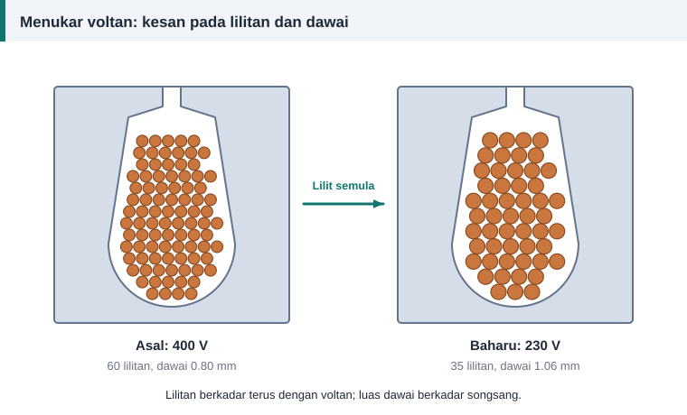

Pengiraan belitan
Menukar Voltan Motor: Kira Lilitan dan Saiz Dawai Baharu
Permintaan menukar voltan motor datang dalam dua bentuk. Satu boleh diselesaikan dengan pemutar skru di kotak terminal. Satu lagi memerlukan belitan baharu. Kenal pasti kes anda dahulu.
Kes 1: sambungan semula sudah cukup
Motor bertanda Δ/Y 230/400 V yang berjalan dalam bintang pada 400 V boleh terus digunakan pada bekalan tiga fasa 230 V dengan menukar kepingan penyambung kepada delta. Tiada lilitan semula diperlukan. Keadaan ini biasa apabila motor kecil hendak dipacu oleh pemacu frekuensi boleh ubah dengan masukan satu fasa 230 V.
Begitu juga belitan yang setiap fasanya terdiri daripada dua litar. Sambungan bersiri sesuai untuk voltan tinggi dan sambungan selari untuk separuh voltan itu.
Kes 2: belitan mesti ditukar
Motor bertanda 400/690 V berjalan dalam delta pada 400 V dan tidak boleh disambung semula untuk 230 V. Di sinilah lilitan semula diperlukan.


Dua nisbah
N baharu = N asal × (V baharu ÷ V asal)
A baharu = A asal × (V asal ÷ V baharu)
Bilangan lilitan berkadar terus dengan voltan supaya fluks kekal. Luas dawai berkadar songsang supaya ketumpatan arus dan isian alur kekal. Diameter berubah mengikut punca kuasa dua nisbah luas.
Contoh: 400 V kepada 230 V
Belitan asal mempunyai 60 lilitan dawai 0.80 mm setiap gegelung.
- N baharu = 60 × 230 ÷ 400 = 34.5, dibundarkan kepada 35.
- Luas asal ialah 0.503 mm². Luas baharu = 0.503 × 400 ÷ 230 = 0.874 mm², iaitu diameter 1.055 mm.
- Saiz piawai terdekat ialah 1.06 mm.
| Perkara | Asal (400 V) | Baharu (230 V) |
|---|---|---|
| Lilitan per gegelung | 60 | 35 |
| Dawai | 0.80 mm | 1.06 mm |
| Luas kuprum dalam alur | 30.2 mm² | 30.9 mm² |
| Arus fasa | I | 1.74 × I |
| Kuasa kadaran | Sama | Sama |
Pembundaran 34.5 kepada 35 menurunkan fluks kira-kira 1.4%, yang boleh diterima. Membundarkan ke bawah kepada 34 menaikkan fluks 1.5%.
Bila pembundaran menjadi masalah
Bagi gegelung dengan lilitan yang sedikit, satu lilitan ialah perubahan besar. Nilai 7.5 lilitan tidak boleh dibundarkan kepada 7 atau 8 tanpa mengubah fluks kira-kira 6% hingga 7%. Penyelesaiannya ialah menukar bilangan laluan selari atau jenis sambungan supaya bilangan lilitan yang diperlukan lebih hampir kepada nombor bulat.
Perkara yang tidak berubah
- Bilangan kutub, rentang gegelung dan jenis belitan.
- Kelas penebat. Voltan yang lebih rendah tidak membenarkan penebat yang lebih nipis.
- Kuasa kadaran dan laju.
Perkara yang berubah
- Arus talian, dan bersamanya saiz kabel, fius serta tetapan geganti beban lampau.
- Plat nama. Tandakan voltan dan arus baharu dengan jelas supaya orang seterusnya tidak tersilap.
Menukar frekuensi sekali
Jika frekuensi turut berubah, tambah satu lagi nisbah seperti diterangkan dalam motor 60 Hz pada bekalan 50 Hz. Tab "Tukar voltan" pada kalkulator mengendalikan kedua-dua perubahan serentak.
Rujukan dan bacaan lanjut
Artikel berkaitan
Sambungan Bintang dan Delta: Voltan, Arus dan Kesan pada Belitan
Belitan yang sama boleh bekerja pada dua voltan bergantung pada sambungan bintang atau delta. Fahami hubungan voltan dan arus fasa serta kesannya pada pengiraan lilitan.
Motor 60 Hz pada Bekalan 50 Hz: Kesan Voltan dan Frekuensi
Motor import 60 Hz tidak semestinya sesuai dengan bekalan 50 Hz. Nisbah voltan kepada frekuensi menentukan sama ada teras tepu, dan bila lilitan semula diperlukan.
Menggunakan Dawai Selari Sebagai Ganti Saiz yang Tiada
Saiz dawai yang diperlukan tiada di kedai? Dua atau tiga dawai halus selari boleh menggantikannya asalkan jumlah luas keratan kekal. Lihat formula dan jadual gabungan.